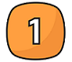
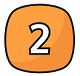
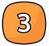

Tietoa adoptiosta
Haluamme, että jokainen eläin löytää kodin, jossa se voi olla onnellinen ja turvallinen.
Adoptioprosessimme on suunniteltu huolellisesti, jotta sekä eläin että uusi omistaja voivat tutustua
toisiinsa rauhassa. Sivuiltamme löydät tarkat vaiheet, joita adoptioprosessi sisältää, sekä vinkkejä
siihen, miten voit valmistautua uuden perheenjäsenen vastaanottamiseen.
Jos jokin askarruttaa tai haluat lisätietoja, ota rohkeasti yhteyttä sähköpostitse tai puhelimitse -
autamme mielellämme kaikissa kysymyksissä.

Katso ensin nettisivuiltamme kotia etsivät eläimet. Ota meihin yhteyttä sähköpostitse
tai puhelimitse, jos olet kiinnostunut adoptoimaan eläimen. Kerro lyhyesti itsestäsi ja
siitä, millaista kotia tarjoat.

Keskustelemme kanssasi tarkemmin kodin ja elämäntilanteen sopivuudesta eläimelle.
Saatamme tehdä myös kotikäynnin varmistaaksemme turvallisen ympäristön.

Kun kaikki tiedot on kerätty, teemme päätöksen adoptiosta. Saat tiedon nopeasti
ja yhdessä sovimme seuraavat askeleet, jotta eläin pääsee turvallisesti uuteen
kotiinsa.